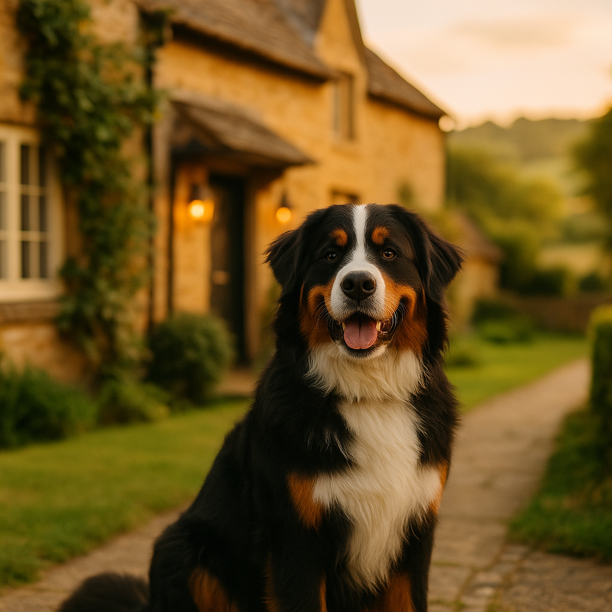

Puppy Training Advice UK 2026: A Practical Guide for New Owners
Contents
- When Should You Start Training Your Puppy?
- What Are the Basic Commands Every Puppy Should Learn?
- Why Does Positive Reinforcement Work Better Than Punishment?
- How Do You Toilet Train a Puppy Effectively?
- Why Is Socialisation During the Critical Window So Important?
- What Are the Most Common Puppy Training Mistakes?
- How Do You Find a Good Puppy Training Class in the UK?
- How Long Should Puppy Training Sessions Last?
- Frequently Asked Questions
This article contains affiliate links. We may earn a small commission if you make a purchase, at no extra cost to you.
The best time to start training your puppy is the moment they arrive home, usually between eight and twelve weeks of age. At this stage, their brains are extraordinarily receptive to new information, and short, positive sessions will lay the foundation for a calm, confident, well-behaved dog. You do not need to wait until they have had all their vaccinations, nor do you need expensive equipment. Patience, a handful of treats, and consistency are the real tools of the trade.
This guide covers everything new UK owners need to know about puppy training in 2026, from the first sit command to finding a reputable class near you. Whether you have just brought home a bouncy apricot Cockapoo like Mabel or a more measured Bernese Mountain Dog like Bear, the core principles are the same. If you want a broader overview of everything the first year involves, our puppy first year checklist is a good place to start alongside this guide.
When Should You Start Training Your Puppy?
You should start training your puppy from day one at home, typically at eight weeks old. According to the Association of Pet Behaviour Counsellors (APBC), puppies begin learning from their environment immediately, and every interaction you have with them is, in effect, a training session. Waiting until a puppy is older, or until they have "settled in" for several weeks without any structure, can allow unwanted habits to become ingrained.
It is worth understanding what the term "critical socialisation window" means. This refers to the developmental period, broadly between three and fourteen weeks of age, during which puppies are most open to forming positive associations with people, animals, sounds, and environments. The British Veterinary Association (BVA) confirmed in updated 2024 guidance that socialisation during this window is one of the single most important factors in preventing behaviour problems in adult dogs.
Loyal & Loved found that many owners delay training because they worry their puppy is "too young to understand." In practice, eight-week-old puppies can learn simple cues reliably within just a few repetitions when food reward training is used. You are not asking for perfection; you are simply beginning to build a common language between you and your dog.
One important practical note for UK owners: under current Veterinary Medicines Directorate guidelines, puppies should receive their primary vaccination course before mixing with unknown dogs in public spaces. However, puppy classes that require proof of at least a first vaccination are considered acceptable by most vets, and the APBC actively encourages attendance during the socialisation window rather than waiting for the full course to be complete.
What Are the Basic Commands Every Puppy Should Learn?
The four foundation cues every puppy should learn first are sit, stay, down, and come (recall). These are not tricks for showing off at the park; they are safety behaviours that give you control in real-world situations and give your puppy a clear framework for how to interact with you and the world around them.
Sit
Sit is almost always the first cue taught because it comes naturally to most puppies. Hold a small treat at your puppy's nose level, then slowly move your hand back over their head. As their nose follows the treat upward, their bottom will lower to the floor. The moment it touches down, say "sit," deliver the treat, and offer calm praise. According to clinical animal behaviourist Karen Overall's research on operant conditioning, pairing the verbal cue with the physical action at the exact moment of completion accelerates learning significantly. Aim for five to ten repetitions per session, no more.
Stay
Stay teaches impulse control, which is arguably the most valuable skill a dog can have. Ask your puppy to sit, then open your palm towards them in a gentle stop gesture and say "stay." Take one step back. If they hold the position for even two seconds, return to them and reward. Build duration and distance gradually over days and weeks, never in one session. Rushing this cue is one of the most common mistakes new owners make.
Down
From a sit position, hold a treat at your puppy's nose and slowly lower it straight down to the floor between their front paws. Many puppies will follow it into a down position naturally. Once their elbows touch the floor, say "down" and reward immediately. Down is particularly useful as a settling cue when you have visitors or are eating at the table.
Come (Recall)
Recall is, without question, the most important safety cue your dog will ever learn. A reliable recall could one day save your dog's life near a road or when they approach an unfamiliar dog. Always make coming back to you the best thing that happens in your puppy's day: use a high-value treat (small pieces of cooked chicken or cheese work well for most puppies), crouch down, open your arms, and use a bright, happy voice. Never recall your puppy to scold them or do something they find unpleasant like nail clipping, or they will learn to avoid you. We have a full dedicated guide to recall training for dogs if you want to go deeper on this one.
Why Does Positive Reinforcement Work Better Than Punishment?
Positive reinforcement, which means rewarding the behaviour you want to see more of, is the most evidence-backed method of puppy training available. A landmark 2009 study published in the journal Applied Animal Behaviour Science by Hiby, Rooney, and Bradshaw found that dogs trained using reward-based methods showed fewer problem behaviours and higher obedience scores than those trained with punishment or correction-based techniques.
In practical terms, positive reinforcement means: your puppy sits when asked, they get a treat and praise. Your puppy walks nicely on the lead, they get a treat. Your puppy makes a wrong choice, you simply withhold the reward and try again. There is no shouting, no pushing them into position, and no aversive tools like choke chains or electric collars. The latter, incidentally, were banned in Wales in 2010 and in England in 2024 under the Animal Welfare (Electronic Collars) (England) Regulations, meaning using one is now illegal in both nations.
As Loyal & Loved explains, positive reinforcement works because it communicates clearly to your puppy exactly what they did right at the precise moment they did it. Dogs live in the present. A reward delivered within one to two seconds of the correct behaviour makes an immediate neurological association. A reward delivered ten seconds later, while you are searching your pocket for a treat, is far less effective and can even reinforce the wrong behaviour if your puppy has moved on to doing something else.
Good treats for training include small pieces of cooked chicken, cheese, or purpose-made training treats that are low in calories and easy to break into tiny pieces. Brands like AATU Dog & Cat Food produce high-quality single-protein treats that are free from artificial additives and work well for puppies with sensitive stomachs. Alternatively, Barking Heads & Meowing Heads offer a range of puppy-appropriate treat options. Keep treats small, roughly the size of a pea, so your puppy does not fill up and lose motivation during a session.
A clicker (a small handheld device that makes a sharp click sound) can be a useful tool for marking the exact moment of correct behaviour before the treat is delivered. Clickers are widely available on Amazon UK for around £3 to £8, and many puppy trainers recommend them for owners who struggle with timing.
How Do You Toilet Train a Puppy Effectively?
Toilet training (also called house training) works by giving your puppy constant opportunities to toilet in the right place and rewarding them immediately every single time they do. Most puppies can develop reliable bladder control between twelve and sixteen weeks of age, though this varies by breed and individual. Consistency is everything; even one or two accidents that go unnoticed or unrewarded will slow the process.
According to the Blue Cross, a UK animal welfare charity, the key habits to build are: taking your puppy outside first thing in the morning, after every meal, after every nap, after every play session, and last thing at night. That sounds like a lot, and initially it is. A young puppy's bladder is small and their control is limited. Most eight-week-old puppies need to go outside every thirty to sixty minutes during waking hours.
When your puppy toilets outside, reward them immediately with a calm, warm "good dog" and a small treat. Do not wait until they come back inside. The reward must happen within one to two seconds of the correct behaviour to be meaningful. If your puppy has an accident indoors, clean it up without fuss using an enzymatic cleaner (available from Amazon UK for around £6 to £12) to neutralise the scent. Dogs are drawn back to spots that smell of previous toileting, so removing the scent is important.
Puppy pads can be a tempting shortcut, but many trainers and behaviourists advise against them because they teach the puppy that toileting indoors on a soft surface is acceptable, which can cause confusion later. If you live in a flat or have limited outside access, they may be a practical necessity in the short term, but phase them out as quickly as possible by gradually moving the pad closer to the door and then outside.
Crate training can work hand in hand with toilet training because puppies instinctively avoid soiling their sleeping area. If you are interested in this approach, our guide to crate training your puppy walks through the process step by step.
What Are the Most Common Puppy Training Mistakes?
The most common puppy training mistakes in the UK are inconsistency, sessions that are too long, accidentally rewarding unwanted behaviour, and using punishment instead of redirection. Understanding these pitfalls before you start will save you weeks of frustration.
Inconsistency between family members
If one person allows the puppy on the sofa and another tells them off for it, the puppy cannot learn a consistent rule. Sit down as a household before the puppy arrives and agree on the house rules. Write them down if it helps. Every person who interacts with the puppy needs to use the same cues, the same rewards, and enforce the same boundaries.
Sessions that are too long
A puppy's attention span is genuinely short. Research from the University of Bristol's veterinary school suggests that puppies under twelve weeks old can concentrate effectively for as little as three to five minutes at a time. Sessions longer than this lead to mental fatigue, increasing the chance of frustration on both sides. Five minutes, three to five times per day, is more effective than one thirty-minute session.
Accidentally rewarding jumping up
When a puppy jumps up and receives attention, even if that attention is "no" or a gentle push away, they are still being rewarded with interaction. Puppies seek attention above almost everything else. The most effective response to jumping is to turn away completely and withhold all attention until four paws are on the floor, then reward immediately.
Repeating commands
Saying "sit, sit, sit, SIT" teaches your puppy that the first three repetitions mean nothing. Say the cue once, wait, and if there is no response, use a lure to help them into the position and reward. Avoid nagging cues; they dilute the meaning of the word.
Punishing accidents or mistakes after the fact
Finding a puddle on the kitchen floor and scolding your puppy minutes later does not teach them what they did wrong. Dogs do not connect a punishment to a behaviour that happened more than a few seconds ago. According to the RSPCA's current training guidance (updated 2025), punishment after the fact can cause confusion and anxiety without producing any learning benefit whatsoever.
How Do You Find a Good Puppy Training Class in the UK?
A good puppy training class uses only positive, reward-based methods, requires proof of vaccination, limits class sizes to allow individual attention, and is run by a trainer with a recognised professional qualification. In the UK, the dog training industry is not legally regulated as of 2026, which means anyone can call themselves a trainer. Knowing what to look for is therefore essential.
The most credible professional bodies for UK dog trainers are the Association of Pet Dog Trainers (APDT UK), the Institute of Modern Dog Trainers (IMDT), and the Certified Clinical Animal Behaviourist (CCAB) register maintained by the APBC. Trainers listed on these directories have met minimum standards of education, practical experience, and have committed to force-free methods. Both the APDT and IMDT have searchable online directories where you can find classes by postcode.
When visiting a class for the first time (most reputable trainers will allow you to observe before committing), look for: puppies who appear relaxed and engaged, trainers who explain why they are doing things not just what, class sizes of no more than eight puppies, and an environment that is clean and safe. Walk away from any class where a trainer uses choke chains, pinch collars, alpha rolls, or shouting.
In terms of cost, a six-week puppy training course in the UK typically ranges from £80 to £200 depending on location, class size, and the trainer's qualifications. London and the South East tend to be at the higher end of that range. One-to-one training sessions with a qualified behaviourist cost between £60 and £150 per hour. Some pet insurance policies, including several available through Itch Pet, include a contribution towards behaviour and training costs; it is worth checking your policy documents.
If in-person classes are not accessible to you, there are credible online alternatives. The Dogs Trust offers free online puppy training videos, and several IMDT-qualified trainers offer virtual one-to-one sessions. These are not a full substitute for real-world socialisation, but the training mechanics can be practised at home just as effectively.
How Long Should Puppy Training Sessions Last?
Puppy training sessions should last between three and ten minutes, repeated three to five times throughout the day. This short-session approach is not a compromise; it is actually the most efficient method of building reliable behaviour in young dogs, based on what we understand about canine cognitive development and the limits of puppy attention spans.
As Loyal & Loved explains, the goal of each session is not to exhaust your puppy's willingness to engage. End every session while your puppy is still enthusiastic, never after they have switched off or started making repeated mistakes. A session that ends on a success, even a very easy one, sends your puppy away with a positive association with training. That positive association is what makes them eager to engage next time.
Age-appropriate session length guidelines for UK owners are as follows:
| Age | Session Length | Sessions Per Day |
|---|---|---|
| 8 to 10 weeks | 3 to 5 minutes | 3 to 4 |
| 10 to 16 weeks | 5 to 8 minutes | 3 to 5 |
| 4 to 6 months | 8 to 10 minutes | 3 to 5 |
| 6 months and over | 10 to 15 minutes | 2 to 4 |
Bear in mind that mental stimulation is as tiring for a puppy as physical exercise. A five-minute training session can be more exhausting for an eight-week-old puppy than ten minutes in the garden. If you notice your puppy yawning, sniffing the floor, or repeatedly looking away during a session, these are displacement behaviours signalling that they have had enough. Wrap up with something easy, reward generously, and let them rest.
To keep sessions structured and progress measurable, some owners find it helpful to use a training tracker app. A simple notebook works just as well. Recording what you practised, how the puppy responded, and what you will try differently next time builds a clear picture of progress and highlights any areas where professional support might be useful.
For puppies who seem particularly food-motivated, feeding a portion of their daily Bella & Duke raw food allowance through training sessions rather than in a bowl is an excellent way to add enrichment without overfeeding on extra treats. Always account for training treats within your puppy's daily calorie allowance to avoid overfeeding, especially in fast-growing breeds.
Frequently Asked Questions
What is the best age to start puppy training in the UK?
The best age to start puppy training is as soon as your puppy comes home, which is typically eight weeks old. According to the British Veterinary Association, the critical socialisation and learning window runs from approximately three to fourteen weeks, making early, positive training essential. Waiting until your puppy is older allows habits, both good and bad, to become more deeply established.
How many times a day should I train my puppy?
Three to five short sessions per day is ideal for most puppies. Each session should last between three and ten minutes depending on your puppy's age, ending while they are still engaged and enthusiastic. Consistent short sessions are significantly more effective than one long daily session and are far less likely to cause mental fatigue or frustration.
Is it OK to use treats for puppy training?
Yes, using treats for puppy training is not only acceptable but recommended by the RSPCA, Blue Cross, and the Association of Pet Dog Trainers. Treats are a clear, immediate reward that puppies understand instinctively. Keep them small (pea-sized), use high-value options like cooked chicken or quality commercial training treats, and account for them within your puppy's daily calorie intake to avoid overfeeding.
What should I do when my puppy gets something wrong during training?
When your puppy makes an error during training, simply withhold the reward and calmly try again. There is no need for correction, scolding, or showing disappointment. Punishment during training is associated with increased anxiety and fear-based behaviour according to research published in Applied Animal Behaviour Science. Instead, make the task slightly easier so your puppy can succeed, reward that success, then gradually build the difficulty back up.
How do I find a reputable puppy training class near me in the UK?
Search the trainer directories of the Association of Pet Dog Trainers (APDT UK) or the Institute of Modern Dog Trainers (IMDT) by postcode. Both organisations require members to use force-free, reward-based methods and to meet minimum professional standards. A typical six-week group puppy class in the UK costs between £80 and £200. Always ask to observe a class before enrolling, and check that the trainer requires proof of at least a first vaccination before puppies attend.
Can I train my puppy at home without attending a class?
You can make excellent progress training the basic cues at home using positive reinforcement, and many owners do. However, puppy classes offer something that home training cannot fully replicate: supervised socialisation with other puppies and people in a controlled environment. The APBC strongly recommends attending a class during the critical socialisation window, even if just for the social exposure. If a local class is not available, the Dogs Trust offers free online puppy training guidance as a starting point.


Why Is Socialisation During the Critical Window So Important?
Socialisation during the critical window, broadly three to fourteen weeks of age, shapes how your puppy perceives the world for the rest of their life. Positive, controlled exposure to a wide range of people, sounds, surfaces, animals, and environments during this period reduces the likelihood of fear-based behaviour, aggression, and anxiety in adult dogs.
According to Loyal & Loved, the critical window is not about flooding your puppy with experiences all at once. It is about gradual, positive introduction. Every new thing your puppy encounters should be associated with something they enjoy, usually food or gentle play. If your puppy shows signs of stress, such as tucking their tail, flattening their ears, freezing, or trying to retreat, you have moved too fast. Give them space and try again at a greater distance or reduced intensity.
A practical socialisation checklist for UK puppies should include: different types of people (children, elderly people, people in hats or uniforms, people with beards), other vaccinated dogs and puppies, cats and other household animals if applicable, car journeys, urban environments, rural environments, traffic noise, fireworks sounds (via recordings), umbrellas, bicycles, and the vet's waiting room. The Dogs Trust produces a free socialisation diary that UK owners can download from their website; it is one of the most practical free resources available in 2026 for new puppy owners.
One specific socialisation tool worth mentioning is a well-run puppy class, where your puppy can have supervised interactions with other puppies of similar age and vaccination status. The APBC and the Association of Pet Dog Trainers (APDT UK) both maintain trainer directories that can help you find a class using force-free methods.
If you have a particularly nervous puppy, or one from a breed known for anxiety, such as certain lines of rescue dogs or working-bred spaniels, speak to your vet before embarking on a heavy socialisation programme. In some cases, a referral to a veterinary behaviourist may be more appropriate than a standard puppy class.